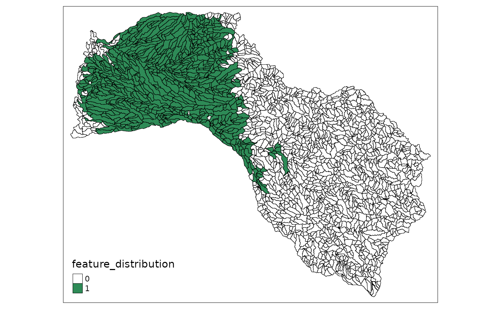
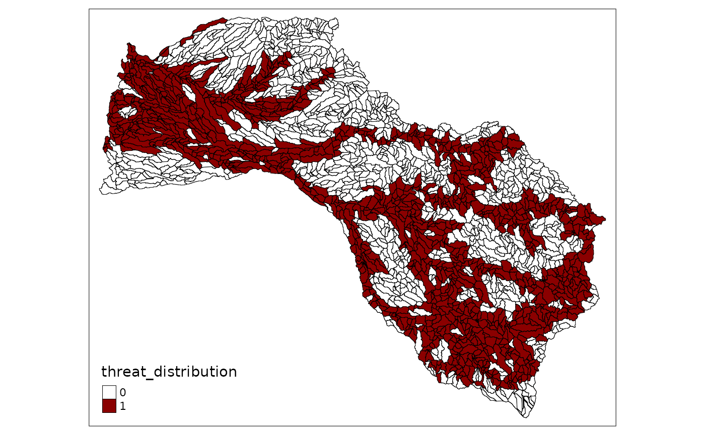
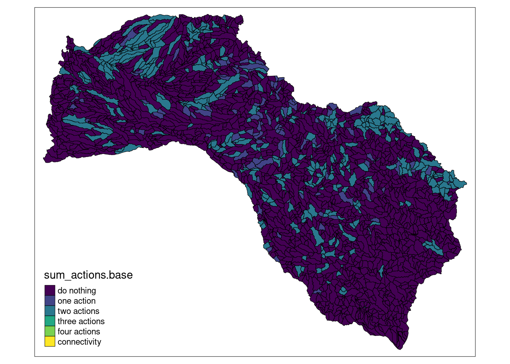
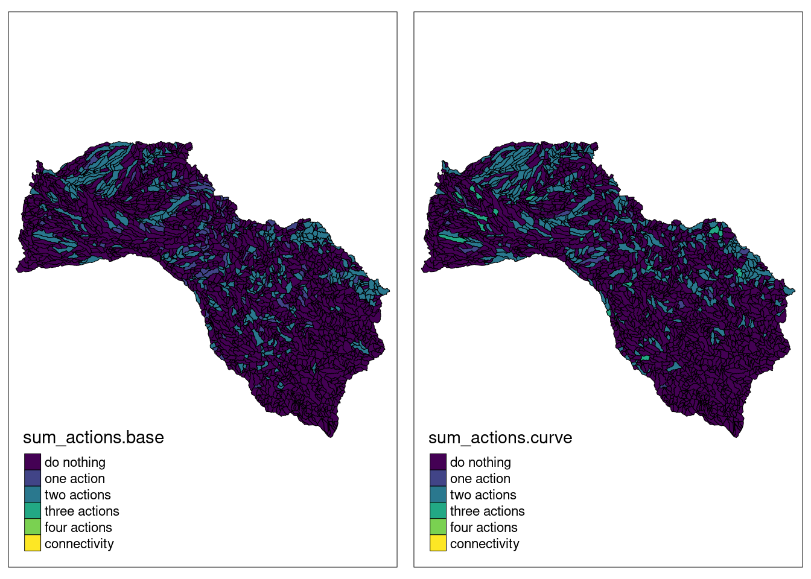
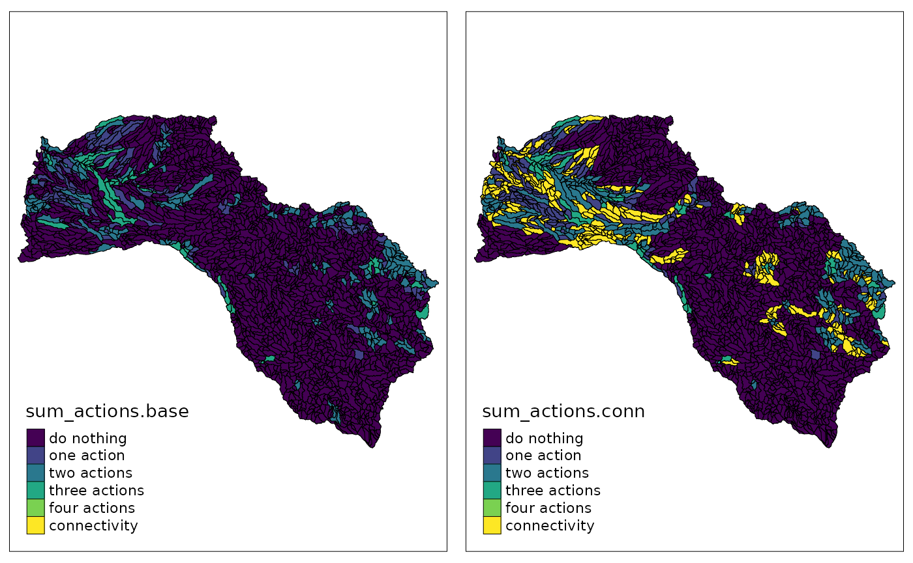
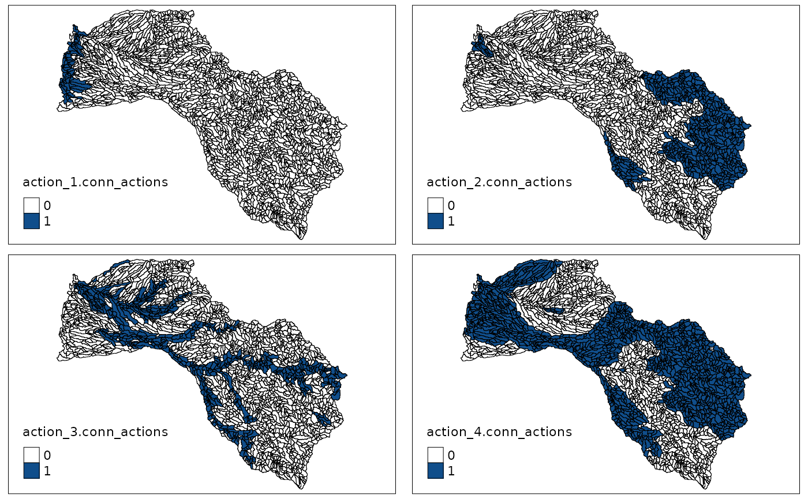

The Mitchell River is a river located in Far North Queensland, Australia. The river rises on the Atherton Tableland about 50 kilometres (31 mi) northwest of Cairns, and flows about 750 kilometres (470 mi) northwest across Cape York Peninsula from Mareeba to the Gulf of Carpentaria. we will use this case study to present some functionalities of the prioriactions package.
We started loading libraries:
# load packages
library(prioriactions)
library(raster) #To plot of shapefiles
library(tmap) #To create cool maps
library(scales) #To standardize the value of amount
library(reshape2) #To use the melt function
library(sp) #To use the spplot function
library(viridis) #To use viridis palletePreparing data inputs
We divided the whole catchment (71,630 km2 into 2316 sites (i.e., sub-catchments), each one included the portion of river length between two consecutive river connections. We considered four major threats to freshwater fish species in the catchment: water buffalo (Bubalis bubalis), cane toad (Bufo marinus), river flow alteration (caused by impoundments, channels for water extractions and levee banks) and grazing land use. Also, we used the modelled spatial distribution of 45 fish species in the Mitchell river catchment as our conservation features. All input files will be loaded directly from the prioriactions package as follows:
path <- system.file("extdata/mitchell_vignette_data/",
package = "prioriactions")
pu_data <- data.table::fread(file = paste0(path,
"/pu_mitchell.csv"),
data.table = FALSE)
features_data <- data.table::fread(file = paste0(path,
"/features_mitchell.csv"),
data.table = FALSE)
dist_features_data <- data.table::fread(file = paste0(path,
"/dist_features_mitchell.csv"),
data.table = FALSE)
threats_data <- data.table::fread(file = paste0(path,
"/threats_mitchell.csv"),
data.table = FALSE)
dist_threats_data <- data.table::fread(file = paste0(path,
"/dist_threats_mitchell.csv"),
data.table = FALSE)
bound_data <- data.table::fread(file = paste0(path,
"/boundary_mitchell.csv"),
data.table = FALSE)
sensitivity_data <- data.table::fread(file = paste0(path,
"/sensibility_mitchell.csv"),
data.table = FALSE)We load the shapefile of the case study also included as part of the package installation:
# read shapefile
shp_mitchell = raster::shapefile("data/Fish_Mitchell.shp")
sp::spplot(shp_mitchell,
zcol = "Shape_Area",
names.attr = "Area",
main = "Planning unit areas",
col.regions = viridis::viridis(20))
Now, we can plot different distributions of features or threats on the shapefile loaded. To do it, we can assign the values from tabular input to some shapefile field:
# load amount of dist_features data
dist_features <- reshape2::dcast(dist_features_data,
pu~feature,
value.var = "amount",
fill = 0)
# assign the distribution of first feature to feature_distribution field
# in the shapefile
shp_mitchell$feature_distribution <- dist_features[, 2]
# plot distribution with tmap library
tmap::tm_shape(shp_mitchell) +
tmap::tm_fill("feature_distribution",
pal = c("white", "seagreen"),
labels = c("0", "1"),
breaks = c(0,1,2)) +
tmap::tm_borders(col="black",
lwd = 0.5)
In the same way, we can observe the distributions of some threats:
# load amount of dist_threats data
dist_threats <- reshape2::dcast(dist_threats_data,
pu~threat,
value.var = "amount",
fill = 0)
# assign the distribution of third threat to feature_distribution field
# in the shapefile
shp_mitchell$threat_distribution <- dist_threats[, 4]
# plot distribution with tmap library
tmap::tm_shape(shp_mitchell) +
tmap::tm_fill("threat_distribution",
pal = c("white", "red4"),
labels = c("0", "1"),
breaks = c(0,1,2)) +
tmap::tm_borders(col="black",
lwd = 0.5)
Base model
First, our base model considers the prioritization of conservation actions using previously loaded data. Note that for both features and threats we have presence/absence values (binary values). Some of the characteristics of the base model are the following:
- We use
minimiCoststype of model to minimize costs by reaching 15% of the maximum recovery benefit per feature as target. - The model does not consider spatial requirements to the actions (blm and blm_actions parameters equal to 0).
- There is no attempt to optimize that planning actions occur within the same planning units (i.e., the curve parameter is equal to 1).
To proceed we follow the three-step scheme described in the prioriactions package: 1) data validation, 2) model creation and 3) solve the model.
# step 1: data validation
input_data <- inputData(pu = pu_data,
features = features_data,
dist_features = dist_features_data,
threats = threats_data,
dist_threats = dist_threats_data,
sensitivity = sensitivity_data,
bound = bound_data)
input_data
#> Conservation Problem
#> planning units: data.frame (2316 units)
#> monitoring costs: min: 1, max: 1
#> features: scl_ja, nem_er, thr_sc, ... (45 features)
#> threats: threat1, threat2, threat3, threat4 (4 threats)
#> action costs: min: 1, max: 1Now, we can check if the recovery targets included by the imported data correspond to the 15% that we want to evaluate. For this we use the getPotentialBenefit() function.
# view the original targets
input_targets <- features_data$target_recovery
maximum_benefits <- getPotentialBenefit(input_data)$maximum.recovery.benefit
input_targets*100/maximum_benefits
#> [1] 14.450867 9.505703 24.038462 15.313936 42.016807 36.231884 7.215007 16.077170
#> [9] 10.449321 11.520737 20.746888 20.000000 35.460993 14.326648 6.038647 100.000000
#> [17] 100.000000 4.502476 100.000000 13.755158 100.000000 49.261084 6.385696 33.333333
#> [25] 17.152659 4.965243 32.786885 4.972650 100.000000 4.732608 5.361930 6.207325
#> [33] 7.385524 100.000000 8.058018 100.000000 12.210012 100.000000 23.584906 4.928536
#> [41] 5.313496 100.000000 24.509804 40.816327 100.000000Note that currently, the recovery target values are not located at 15%. Where values ranging from 4.5% to 100% are distinguished. To change them, we use the getPotentialBenefit() function and assign it to the corresponding column of the feature data input and create the object ConservationProblem-class again.
features_data$recovery_target <- maximum_benefits * 0.15
# step 1: validate modified data
input_data <- inputData(pu = pu_data,
features = features_data,
dist_features = dist_features_data,
threats = threats_data,
dist_threats = dist_threats_data,
sensitivity = sensitivity_data,
bound = bound_data)
input_data
#> Conservation Problem
#> planning units: data.frame (2316 units)
#> monitoring costs: min: 1, max: 1
#> features: scl_ja, nem_er, thr_sc, ... (45 features)
#> threats: threat1, threat2, threat3, threat4 (4 threats)
#> action costs: min: 1, max: 1With the input data validated, we proceed to create the mathematical model using the problem() function with curve = 1.
# step 2:
model.base <- problem(input_data,
model_type = "minimizeCosts",
blm = 0,
curve = 1)
#> Warning: The blm argument was set to 0, so the boundary data has no effect
#> Warning: Some blm_actions argument were set to 0, so the boundary data has no effect for these cases
model.base
#> Optimization Problem
#> model sense: minimization
#> dimensions: 72336, 78145, 3211.456 kB (nrow, ncol, size)
#> variables: 78145Note that the dimensions of the model are 72336 mathematical constraints and 78145 variables. To see more details of the model we can use the getModelInfo() function:
getModelInfo(model.base)
#> model_sense n_constraints n_variables size
#> 1 minimization 72336 78145 3211.456 kBTo solve this model, the solver was configured to stop when a gap of at least 5% is achieved (0% meaning that at least one of the optimal solutions has been found).
# step 3:
solution.base <- solve(model.base,
gap_limit = 0.05,
verbose = TRUE,
output_file = FALSE)
#> Gurobi Optimizer version 9.1.2 build v9.1.2rc0 (linux64)
#> Thread count: 2 physical cores, 4 logical processors, using up to 2 threads
#> Optimize a model with 72336 rows, 78145 columns and 206496 nonzeros
#> Model fingerprint: 0x4a06d72c
#> Variable types: 69930 continuous, 8215 integer (8215 binary)
#> Coefficient statistics:
#> Matrix range [3e-01, 4e+00]
#> Objective range [1e+00, 1e+00]
#> Bounds range [1e+00, 1e+00]
#> RHS range [5e+00, 1e+02]
#> Presolve removed 69104 rows and 70343 columns
#> Presolve time: 0.13s
#> Presolved: 3232 rows, 7802 columns, 26106 nonzeros
#> Variable types: 0 continuous, 7802 integer (6206 binary)
#> Found heuristic solution: objective 1326.0000000
#>
#> Root relaxation: objective 1.011208e+03, 1850 iterations, 0.03 seconds
#>
#> Nodes | Current Node | Objective Bounds | Work
#> Expl Unexpl | Obj Depth IntInf | Incumbent BestBd Gap | It/Node Time
#>
#> 0 0 1011.20833 0 112 1326.00000 1011.20833 23.7% - 0s
#> H 0 0 1063.0000000 1011.20833 4.87% - 0s
#>
#> Explored 1 nodes (2165 simplex iterations) in 0.25 seconds
#> Thread count was 2 (of 4 available processors)
#>
#> Solution count 2: 1063 1326
#>
#> Optimal solution found (tolerance 5.00e-02)
#> Best objective 1.063000000000e+03, best bound 1.012000000000e+03, gap 4.7977%We have achieved a gap of 4.79% and a objective value of 1063. This and other relevant information can be obtained from the getPerformance() function:
getPerformance(solution.base)
#> solution_name objective_value gap solving_time
#> 1 sol 1063 4.798 0.25
#> status
#> 1 Optimal solution (according to gap tolerance: 0.05)Since our objective function does not contain connectivity (because both blm and blm_actions were set to zero) the objective value corresponds to the sum of all the costs incurred. To check this statement we use the getCost() function:
getCost(solution.base)
#> solution_name monitoring threat_1 threat_2 threat_3 threat_4
#> 1 sol 382 19 198 85 379It is distinguished that the actions with the highest total cost correspond to those that go against the threat 4, and then those corresponding to monitoring.
We use the getActions() function to know the distribution of conservation actions. Note that due we use a recovery target planning propose, the planning units only be selected to perform some actions on it (therefore without values in the conservation and connectivity columns).
# get actions distribution
solution_actions.base <- getActions(solution.base)
head(solution_actions.base)
#> solution_name pu 1 2 3 4 conservation connectivity
#> 1 sol 1 0 0 0 0 0 0
#> 2 sol 2 0 1 1 1 0 0
#> 3 sol 3 0 0 0 0 0 0
#> 4 sol 4 0 0 0 0 0 0
#> 5 sol 5 0 0 0 1 0 0
#> 6 sol 6 0 1 0 1 0 0In the same way that we use to plot the distributions of species and threats, we can obtain how the selected actions are spatially distributed:
# assign solution to shapefile field to plot it
shp_mitchell$action_1.base <- solution_actions.base$`1`
shp_mitchell$action_2.base <- solution_actions.base$`2`
shp_mitchell$action_3.base <- solution_actions.base$`3`
shp_mitchell$action_4.base <- solution_actions.base$`4`
# actions plots
plot_action1.base <- tmap::tm_shape(shp_mitchell) +
tmap::tm_fill("action_1.base",
pal = c("white", "dodgerblue4"),
labels = c("0", "1"),
breaks = c(0,1,2)) +
tmap::tm_borders(col="black",
lwd = 0.5)
plot_action2.base <- tmap::tm_shape(shp_mitchell) +
tmap::tm_fill("action_2.base",
pal = c("white", "dodgerblue4"),
labels = c("0", "1"),
breaks = c(0,1,2)) +
tmap::tm_borders(col="black",
lwd = 0.5)
plot_action3.base <- tmap::tm_shape(shp_mitchell) +
tmap::tm_fill("action_3.base",
pal = c("white", "dodgerblue4"),
labels = c("0", "1"),
breaks = c(0,1,2)) +
tmap::tm_borders(col="black",
lwd = 0.5)
plot_action4.base <- tmap::tm_shape(shp_mitchell) +
tmap::tm_fill("action_4.base",
pal = c("white", "dodgerblue4"),
labels = c("0", "1"),
breaks = c(0,1,2)) +
tmap::tm_borders(col="black",
lwd = 0.5)
tmap::tmap_arrange(plot_action1.base,
plot_action2.base,
plot_action3.base,
plot_action4.base)
Or the distribution of the sum of the actions (higher density of actions):
shp_mitchell$sum_actions.base <- solution_actions.base$`1` +
solution_actions.base$`2` +
solution_actions.base$`3` +
solution_actions.base$`4` +
solution_actions.base$connectivity*5
# plot sum of actions with tmap library
plot.base <- tmap::tm_shape(shp_mitchell) +
tmap::tm_fill("sum_actions.base",
palette="viridis",
labels = c("do nothing",
"one action",
"two actions",
"three actions",
"four actions",
"connectivity"),
breaks = c(0,1,2,3,4,5,6)) +
tmap::tm_borders(col="black",
lwd = 0.5)
plot.base
The results of this base model will be compared with the subsequent models generated.
Model with different curve param
This model differs from the previous one in that it tries to group conservation actions within the selected sites as part of the management plan (through a non-linear relationship in the calculation of benefits). The latter is done by adding a value other than 1 to the curve parameter. Where: (1) indicates that there is a linear relationship between the quotient between the actions carried out with respect to the possible actions to be carried out with respect to the benefit obtained by a characteristic. (2) indicates a quadratic relationship between these values, and (3) a cubic relationship. In simple terms, the non-linear relationship further penalizes not performing all conservation actions at a site for a particular feature.
model.curve <- prioriactions::problem(input_data,
model_type = "minimizeCosts",
blm = 0,
curve = 2,
segments = 4)
#> Warning: The blm argument was set to 0, so the boundary data has no effect
#> Warning: Some blm_actions argument were set to 0, so the boundary data has no effect for these cases
model.curve
#> Optimization Problem
#> model sense: minimization
#> dimensions: 72336, 113110, 3351.32 kB (nrow, ncol, size)
#> variables: 113110Note that the new model increased its dimensions compared to the previous one (from 43180 to 113110 variables), and therefore, increasing its resolution complexity. In this way, we obtain a value of the objective function of 1091 (greater than the previous one) but with a quality of 2.08%.
solution.curve <- prioriactions::solve(model.curve,
gap_limit = 0.05,
verbose = TRUE,
output_file = FALSE)
#> Gurobi Optimizer version 9.1.2 build v9.1.2rc0 (linux64)
#> Thread count: 2 physical cores, 4 logical processors, using up to 2 threads
#> Optimize a model with 72336 rows, 113110 columns and 206496 nonzeros
#> Model fingerprint: 0x3fe8b489
#> Model has 34965 general constraints
#> Variable types: 104895 continuous, 8215 integer (8215 binary)
#> Coefficient statistics:
#> Matrix range [3e-01, 4e+00]
#> Objective range [1e+00, 1e+00]
#> Bounds range [1e+00, 1e+00]
#> RHS range [5e+00, 1e+02]
#> Presolve added 18157 rows and 112524 columns
#> Presolve time: 1.49s
#> Presolved: 90493 rows, 225634 columns, 551102 nonzeros
#> Presolved model has 32482 SOS constraint(s)
#> Variable types: 215756 continuous, 9878 integer (7284 binary)
#>
#> Deterministic concurrent LP optimizer: primal and dual simplex
#> Showing first log only...
#>
#> Concurrent spin time: 0.00s
#>
#> Solved with dual simplex
#>
#> Root relaxation: objective 1.011208e+03, 14623 iterations, 1.71 seconds
#>
#> Nodes | Current Node | Objective Bounds | Work
#> Expl Unexpl | Obj Depth IntInf | Incumbent BestBd Gap | It/Node Time
#>
#> 0 0 1029.98539 0 3163 - 1029.98539 - - 10s
#> 0 0 1054.13282 0 2278 - 1054.13282 - - 20s
#> 0 0 1054.83410 0 2166 - 1054.83410 - - 22s
#> 0 0 1054.83410 0 2173 - 1054.83410 - - 22s
#> 0 0 1060.76275 0 1660 - 1060.76275 - - 23s
#> 0 0 1064.19067 0 1501 - 1064.19067 - - 26s
#> 0 0 1066.68005 0 1450 - 1066.68005 - - 27s
#> 0 0 1066.69546 0 1416 - 1066.69546 - - 28s
#> 0 0 1066.69546 0 1416 - 1066.69546 - - 28s
#> 0 0 1066.94164 0 1524 - 1066.94164 - - 29s
#> 0 0 1067.24590 0 1581 - 1067.24590 - - 30s
#> 0 0 1067.62284 0 1562 - 1067.62284 - - 30s
#> 0 0 1067.62284 0 1537 - 1067.62284 - - 30s
#> 0 0 1067.62284 0 1495 - 1067.62284 - - 31s
#> 0 0 1067.62284 0 1491 - 1067.62284 - - 31s
#> 0 0 1067.62284 0 1488 - 1067.62284 - - 32s
#> 0 0 1067.62284 0 1485 - 1067.62284 - - 33s
#> 0 0 1067.62284 0 1486 - 1067.62284 - - 33s
#> 0 0 1067.62284 0 1482 - 1067.62284 - - 34s
#> 0 0 1067.62284 0 1482 - 1067.62284 - - 35s
#> 105 4 1067.63725 1 1478 - 1067.63725 - 2.5 53s
#> 131 30 1068.08310 8 1520 - 1067.66484 - 3.7 55s
#> 252 155 1068.08822 39 1517 - 1067.66484 - 4.5 60s
#> 380 299 1069.30042 72 1537 - 1067.66484 - 7.0 65s
#> 541 453 1068.56044 5 1515 - 1067.66484 - 8.3 70s
#> 694 602 1068.62367 44 1543 - 1067.66484 - 8.8 75s
#> 866 766 1070.12622 88 1572 - 1067.66484 - 9.0 80s
#> 902 768 1070.96674 99 173 - 1067.66484 - 8.9 89s
#> 903 769 1069.44172 84 84 - 1067.66484 - 8.9 93s
#> 908 772 1070.04556 90 37 - 1067.66484 - 8.9 95s
#> 915 777 1068.58562 35 44 - 1067.66484 - 8.8 100s
#> 921 781 1073.04975 206 36 - 1067.66484 - 8.8 105s
#> 927 785 1069.30042 72 37 - 1067.66484 - 8.7 117s
#> 929 786 1069.45850 85 37 - 1067.67285 - 8.7 126s
#> 930 790 1067.86170 11 672 - 1067.67285 - 27.1 142s
#> 932 791 1068.22203 12 686 - 1067.86170 - 27.1 146s
#> 934 793 1068.32481 12 670 - 1068.22203 - 27.2 150s
#> 938 795 1068.58236 13 685 - 1068.32481 - 27.2 156s
#> 943 798 1069.04547 14 640 - 1068.32481 - 27.1 160s
#> 958 808 1069.63437 17 656 - 1068.32481 - 26.9 165s
#> 974 823 1070.70675 21 697 - 1068.32481 - 26.7 170s
#> 1013 845 1072.44668 32 680 - 1068.32481 - 26.1 175s
#> 1044 871 1072.61001 40 668 - 1068.32481 - 26.1 181s
#> 1103 918 1073.98961 53 670 - 1068.32481 - 25.4 185s
#> 1146 943 1073.33086 64 621 - 1068.32481 - 25.0 190s
#> 1190 968 1073.41199 75 582 - 1068.32481 - 24.3 196s
#> 1227 996 1073.20989 82 570 - 1068.32481 - 23.8 201s
#> 1272 1038 1073.42175 95 483 - 1068.32481 - 23.1 206s
#> 1326 1070 1073.42469 114 408 - 1068.32481 - 22.4 211s
#> 1385 1109 1073.42467 132 375 - 1068.32481 - 21.7 215s
#> 1439 1155 1073.44932 151 375 - 1068.32481 - 21.1 221s
#> 1498 1184 1073.44932 171 412 - 1068.32481 - 20.5 227s
#> 1521 1195 1073.58333 178 411 - 1068.32481 - 20.5 231s
#> 1558 1230 1073.58333 189 412 - 1068.32481 - 20.6 236s
#> 1618 1276 1074.29723 198 407 - 1068.32481 - 20.7 243s
#> 1653 1287 1074.29723 203 374 - 1068.32481 - 20.9 247s
#> 1676 1307 1074.13805 209 339 - 1068.32481 - 20.9 251s
#> 1704 1320 1074.13805 215 349 - 1068.32481 - 21.0 256s
#> 1726 1343 1074.13805 222 351 - 1068.32481 - 20.9 260s
#> 1783 1361 1074.29333 242 444 - 1068.32481 - 20.8 270s
#> 1809 1370 infeasible 251 - 1068.32481 - 20.6 275s
#> 1835 1392 1073.79772 260 417 - 1068.32481 - 20.6 280s
#> 1868 1427 1074.10959 272 337 - 1068.32481 - 20.6 285s
#> 1914 1440 1074.39361 290 342 - 1068.32481 - 20.4 291s
#> 1944 1478 1074.55577 297 327 - 1068.32481 - 20.5 297s
#> 1994 1509 1074.32358 308 352 - 1068.32481 - 20.4 303s
#> 2042 1574 1074.41756 318 326 - 1068.32481 - 20.0 309s
#> 2125 1650 1074.89811 334 333 - 1068.32481 - 19.5 314s
#> 2230 1656 1076.07333 354 394 - 1068.32481 - 19.6 321s
#> 2272 1693 1076.07333 368 397 - 1068.32481 - 20.1 329s
#> 2341 1745 1074.61333 383 398 - 1068.32481 - 20.3 335s
#> 2432 1761 1076.07333 406 398 - 1068.32481 - 20.4 344s
#> 2503 1816 1076.07333 419 399 - 1068.32481 - 20.3 351s
#> 2590 1892 1075.90000 455 382 - 1068.32481 - 20.3 357s
#> 2703 1947 1075.94162 486 411 - 1068.32481 - 19.9 365s
#> 2796 2006 1075.90286 517 356 - 1068.32481 - 19.9 372s
#> 2888 2043 1075.90286 556 360 - 1068.32481 - 20.4 379s
#> 2957 2062 1075.96288 585 389 - 1068.32481 - 20.7 388s
#> 3008 2112 1075.96288 597 388 - 1068.32481 - 20.9 396s
#> 3077 2172 1075.98829 612 390 - 1068.32481 - 21.4 406s
#> 3160 2226 1075.98829 637 388 - 1068.32481 - 21.4 416s
#> 3241 2279 1075.98829 659 393 - 1068.32481 - 21.4 426s
#> 3321 2343 1075.98829 679 393 - 1068.32481 - 21.5 437s
#> 3409 2421 1075.97500 703 339 - 1068.32481 - 21.8 448s
#> 3535 2515 1078.17994 743 384 - 1068.32481 - 22.1 460s
#> 3653 2618 1078.17994 781 374 - 1068.32481 - 22.1 472s
#> 3756 2736 1078.19994 807 387 - 1068.32481 - 22.0 483s
#> 3874 2872 1079.44824 831 381 - 1068.32481 - 22.0 495s
#> 4020 2938 1079.44824 857 379 - 1068.32481 - 21.7 506s
#> 4188 3024 1079.44824 886 378 - 1068.32481 - 21.1 518s
#> 4378 3099 1079.67346 926 374 - 1068.32481 - 20.5 529s
#> 4554 3160 1079.67346 959 376 - 1068.32481 - 19.9 541s
#> 4721 3246 1078.28278 988 365 - 1068.32481 - 19.4 553s
#> 4897 3302 1078.28278 1021 373 - 1068.32481 - 18.9 567s
#> H 4924 3302 1091.0000000 1068.32481 2.08% 18.9 567s
#>
#> Cutting planes:
#> Gomory: 184
#> Cover: 161
#> Implied bound: 4873
#> Clique: 3
#> MIR: 559
#> StrongCG: 1
#> Flow cover: 715
#> Network: 2
#> RLT: 3
#> Relax-and-lift: 1175
#>
#> Explored 4953 nodes (129406 simplex iterations) in 567.64 seconds
#> Thread count was 2 (of 4 available processors)
#>
#> Solution count 1: 1091
#>
#> Optimal solution found (tolerance 5.00e-02)
#> Warning: max constraint violation (9.9020e-03) exceeds tolerance
#> Warning: max general constraint violation (9.9020e-03) exceeds tolerance
#> (model may be infeasible or unbounded - try turning presolve off)
#> Best objective 1.091000000000e+03, best bound 1.069000000000e+03, gap 2.0165%
# get action distribution
solution_actions.curve <- prioriactions::getActions(solution.curve)
# assign solution to shapefile field to plot it
shp_mitchell$action_1.curve <- solution_actions.curve$`1`
shp_mitchell$action_2.curve <- solution_actions.curve$`2`
shp_mitchell$action_3.curve <- solution_actions.curve$`3`
shp_mitchell$action_4.curve <- solution_actions.curve$`4`
shp_mitchell$sum_actions.curve <- solution_actions.curve$`1` +
solution_actions.curve$`2` +
solution_actions.curve$`3` +
solution_actions.curve$`4` +
solution_actions.curve$connectivity*5
# plot sum of actions with tmap library
plot.curve <- tmap::tm_shape(shp_mitchell) +
tmap::tm_fill("sum_actions.curve",
palette="viridis",
labels = c("do nothing",
"one action",
"two actions",
"three actions",
"four actions",
"connectivity"),
breaks = c(0,1,2,3,4,5,6)) +
tmap::tm_borders(col="black",
lwd = 0.5)
# comparative with base model solution
tmap::tmap_arrange(plot.base, plot.curve)
Thus, we can notice that there are a greater number of sites with a higher density of actions with respect to the previous model (for example, a greater number of units painted green).
Model with connectivity requirements
To add connectivity requirements to the model, there are two key parameters: blm which works in the same way as the parameter of the same name in marxan, which tries to minimize the connectivity penalty between the selected planning units (i.e. regardless if conservation actions are carried out within them). Next we will see what happens when this parameter is relevant in the creation of the model.
input_data.conn <- inputData(pu = pu_data,
features = features_data,
dist_features = dist_features_data,
threats = threats_data,
dist_threats = dist_threats_data, sensitivity = sensitivity_data,
bound = bound_data)
model.conn <- problem(input_data.conn,
model_type = "minimizeCosts",
blm = 2,
curve = 1)
#> Warning: Some blm_actions argument were set to 0, so the boundary data has no effect for these cases
solution.conn <- solve(model.conn,
gap_limit = 0.05,
verbose = TRUE,
output_file = FALSE)
#> Gurobi Optimizer version 9.1.2 build v9.1.2rc0 (linux64)
#> Thread count: 2 physical cores, 4 logical processors, using up to 2 threads
#> Optimize a model with 113532 rows, 91877 columns and 302620 nonzeros
#> Model fingerprint: 0x4afc3cd0
#> Variable types: 69930 continuous, 21947 integer (21947 binary)
#> Coefficient statistics:
#> Matrix range [3e-01, 4e+00]
#> Objective range [1e+00, 2e+01]
#> Bounds range [1e+00, 1e+00]
#> RHS range [1e+00, 1e+02]
#> Presolve removed 75989 rows and 72537 columns
#> Presolve time: 0.32s
#> Presolved: 37543 rows, 19340 columns, 106155 nonzeros
#> Variable types: 0 continuous, 19340 integer (17746 binary)
#> Found heuristic solution: objective 3452.0316640
#>
#> Deterministic concurrent LP optimizer: primal and dual simplex
#> Showing first log only...
#>
#> Concurrent spin time: 0.03s
#>
#> Solved with dual simplex
#>
#> Root relaxation: objective 1.924895e+03, 6965 iterations, 1.10 seconds
#>
#> Nodes | Current Node | Objective Bounds | Work
#> Expl Unexpl | Obj Depth IntInf | Incumbent BestBd Gap | It/Node Time
#>
#> 0 0 1924.89477 0 1904 3452.03166 1924.89477 44.2% - 1s
#> H 0 0 2096.1844829 1924.89477 8.17% - 1s
#> H 0 0 2007.5789747 1924.89477 4.12% - 1s
#>
#> Explored 1 nodes (7516 simplex iterations) in 1.90 seconds
#> Thread count was 2 (of 4 available processors)
#>
#> Solution count 3: 2007.58 2096.18 3452.03
#>
#> Optimal solution found (tolerance 5.00e-02)
#> Best objective 2.007578974650e+03, best bound 1.924894773332e+03, gap 4.1186%In the same way as what occurs in the previous model, it is naturally inferred that the spatial requirement implies higher costs in the management plan, as well as a model with greater computational complexity to resolve. To obtain the costs of both plans we use the getCost() function:
getCost(solution.base)
#> solution_name monitoring threat_1 threat_2 threat_3 threat_4
#> 1 sol 382 19 198 85 379
getCost(solution.conn)
#> solution_name monitoring threat_1 threat_2 threat_3 threat_4
#> 1 sol 736 19 213 115 386
# get action distribution
solution_actions.conn<- getActions(solution.conn)
# assign solution to shapefile field to plot it
shp_mitchell$action_1.conn <- solution_actions.conn$`1`
shp_mitchell$action_2.conn <- solution_actions.conn$`2`
shp_mitchell$action_3.conn <- solution_actions.conn$`3`
shp_mitchell$action_4.conn <- solution_actions.conn$`4`
shp_mitchell$sum_actions.conn <- solution_actions.conn$`1` +
solution_actions.conn$`2` +
solution_actions.conn$`3` +
solution_actions.conn$`4` +
solution_actions.conn$connectivity*5
# plot sum of actions with tmap library
plot.conn <- tmap::tm_shape(shp_mitchell) +
tmap::tm_fill("sum_actions.conn",
palette="viridis",
labels = c("do nothing",
"one action",
"two actions",
"three actions",
"four actions",
"connectivity"),
breaks = c(0,1,2,3,4,5,6)) +
tmap::tm_borders(col="black", lwd = 0.5)
# comparative with base model solution
tmap::tmap_arrange(plot.base, plot.conn)
As seen, minimizing the connectivity penalty produced a more closely related conservation plan compared to the base model.
Another parameter to take into account is the blm_actions that adds the minimization of connectivity penalty between the same conservation actions, this means that it tries to spatially bring the management actions closer together and therefore, independently achieve a management plan as well related.
threats_data$blm_actions <- 10
input_data.conn_actions<- inputData(pu = pu_data,
features = features_data, dist_features = dist_features_data,
threats = threats_data,
dist_threats = dist_threats_data, sensitivity = sensitivity_data,
bound = bound_data)
model.conn_actions <- problem(input_data.conn_actions,
model_type = "minimizeCosts",
blm = 0,
curve = 1)
#> Warning: The blm argument was set to 0, so the boundary data has no effect
solution.conn_actions <- solve(model.conn_actions,
gap_limit = 0.05,
verbose = TRUE,
output_file = FALSE)
#> Gurobi Optimizer version 9.1.2 build v9.1.2rc0 (linux64)
#> Thread count: 2 physical cores, 4 logical processors, using up to 2 threads
#> Optimize a model with 176202 rows, 112767 columns and 448850 nonzeros
#> Model fingerprint: 0x8aadcb97
#> Variable types: 69930 continuous, 42837 integer (42837 binary)
#> Coefficient statistics:
#> Matrix range [3e-01, 4e+00]
#> Objective range [1e+00, 1e+02]
#> Bounds range [1e+00, 1e+00]
#> RHS range [1e+00, 1e+02]
#> Presolve removed 80478 rows and 73141 columns
#> Presolve time: 0.84s
#> Presolved: 95724 rows, 39626 columns, 243423 nonzeros
#> Variable types: 0 continuous, 39626 integer (38365 binary)
#> Found heuristic solution: objective 24438.640413
#> Found heuristic solution: objective 22034.075105
#>
#> Deterministic concurrent LP optimizer: primal and dual simplex
#> Showing first log only...
#>
#> Concurrent spin time: 0.02s
#>
#> Solved with dual simplex
#>
#> Root relaxation: objective 5.151177e+03, 5441 iterations, 1.01 seconds
#>
#> Nodes | Current Node | Objective Bounds | Work
#> Expl Unexpl | Obj Depth IntInf | Incumbent BestBd Gap | It/Node Time
#>
#> 0 0 5151.17692 0 2305 22034.0751 5151.17692 76.6% - 3s
#> H 0 0 5614.4337262 5151.17692 8.25% - 3s
#> H 0 0 5612.4337262 5151.17692 8.22% - 3s
#> 0 0 5408.46572 0 3991 5612.43373 5408.46572 3.63% - 5s
#>
#> Cutting planes:
#> Gomory: 22
#> Cover: 422
#> Clique: 5253
#> MIR: 21
#> Flow cover: 69
#>
#> Explored 1 nodes (7211 simplex iterations) in 5.38 seconds
#> Thread count was 2 (of 4 available processors)
#>
#> Solution count 4: 5612.43 5614.43 22034.1 24438.6
#>
#> Optimal solution found (tolerance 5.00e-02)
#> Best objective 5.612433726186e+03, best bound 5.408465724615e+03, gap 3.6342%The effect of incorporating this parameter (blm_actions) can be seen better in the action distributions:
# get action distribution
solution_actions.conn_actions <- getActions(solution.conn_actions)
# assign solution to shapefile field to plot it
shp_mitchell$action_1.conn_actions <- solution_actions.conn_actions$`1`
shp_mitchell$action_2.conn_actions <- solution_actions.conn_actions$`2`
shp_mitchell$action_3.conn_actions <- solution_actions.conn_actions$`3`
shp_mitchell$action_4.conn_actions <- solution_actions.conn_actions$`4`
# actions plots
plot_action1.conn_actions<- tmap::tm_shape(shp_mitchell) +
tmap::tm_fill("action_1.conn_actions",
pal = c("white", "dodgerblue4"),
labels = c("0", "1"),
breaks = c(0,1,2)) +
tmap::tm_borders(col="black", lwd = 0.5)
plot_action2.conn_actions <- tmap::tm_shape(shp_mitchell) +
tmap::tm_fill("action_2.conn_actions",
pal = c("white", "dodgerblue4"),
labels = c("0", "1"),
breaks = c(0,1,2)) +
tmap::tm_borders(col="black", lwd = 0.5)
plot_action3.conn_actions <- tmap::tm_shape(shp_mitchell) +
tmap::tm_fill("action_3.conn_actions",
pal = c("white", "dodgerblue4"),
labels = c("0", "1"),
breaks = c(0,1,2)) +
tmap::tm_borders(col="black", lwd = 0.5)
plot_action4.conn_actions <- tmap::tm_shape(shp_mitchell) +
tmap::tm_fill("action_4.conn_actions",
pal = c("white", "dodgerblue4"),
labels = c("0", "1"),
breaks = c(0,1,2)) +
tmap::tm_borders(col="black", lwd = 0.5)
tmap::tmap_arrange(plot_action1.conn_actions,
plot_action2.conn_actions,
plot_action3.conn_actions,
plot_action4.conn_actions)
Conclusions
The previously resolved models show part of the characteristics of the prioriactions package. In this vignette, we specifically explore how we can obtain 15% representativeness of the species by modifying different input parameters. For the base case, we have assumed no spatial requirement for the solutions; this implies a less complex model than the later ones. The next measure incorporated a cubic relationship into the benefit calculation (parameter curve = 3)(see more about the benefit calculate in the sensitivities vignette), which was reduced to solutions with higher and more expensive actions densities. While the last two models assumed spatial requirements in the solutions (through the blm and blm_actions parameters), which again increase costs compared to the base case.
Note that the stopping criterion of all the models was by obtaining a minimum gap (gap_limit parameter). However, the solutions obtained gaps with important differences, and some, far from 0% (optimal solution), which implies that the comparison between different solutions should be done carefully and not generalize. To obtain lower gaps, it is suggested to use a longer resolution time.